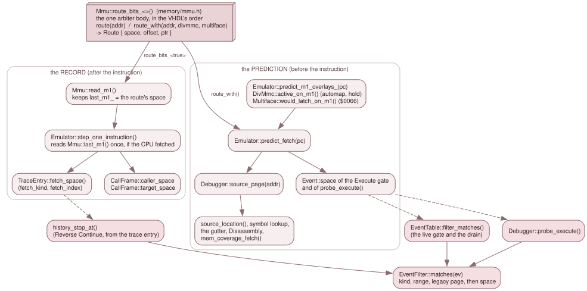

7.1 Which memory supplied the instruction¶
A source map says "the bytes at $8C95 came from main.c:17". On a Next that
sentence is incomplete, because $8C95 is a logical address and the logical
address space is a window onto many memories: the MMU maps RAM pages into eight
slots, and over them a ROM, the DivMMC's ROM or RAM, the Multiface, the
alternate ROM or Layer 2 can be mapped. A program built for RAM page 20 and a
ROM routine at the same logical address are different code with different
source. So every range, label and line breakpoint carries the memory it belongs
to, and every lookup supplies the memory that is mapped now.
That memory is a MemSpace (src/debug/mem_space.h, std headers only). When
it names what supplied a read or an opcode fetch it is called a FetchSource,
an alias of the same type (using FetchSource = MemSpace;) so that a grep finds
the role.

One arbiter body answers every question. The record is taken after an instruction and goes into the trace and the call frames; the prediction is asked before one and feeds every lookup. The Execute filter has one predicate, used in three places.
The kinds¶
A MemSpace is a Kind and a 16-bit index. Equality is by decode path,
not by physical store: Layer2{p} and Page{p} share external SRAM for every
p outside {0x0A, 0x0B, 0x0E}, and DivMmcRam{b}, Config{b}, the
Multiface and the alternate-ROM windows all alias SRAM pages some Page{} also
reaches. They stay distinct because the VHDL arbiter reaches them by different
routes, and a debugger that shows which one answered must not collapse them.
Cpu compares equal whatever its index (operator== in mem_space.h).
| Kind | index |
Store | The VHDL (zxnext.vhd unless named) |
|---|---|---|---|
Cpu |
unused | The live CPU mapping, overlays included. Never an arbiter result: it is the peek side's "whatever the CPU would see" | |
Page |
NR 0x50-0x57 page number, 0..223 |
An 8 KB page. On the Next it is SRAM page n + 0x20, except n = 0x0A/0x0B (the bank-5 BRAM) and 0x0E (the bank-7 BRAM) |
mem_active_page zxnext.vhd:2952; slots 0/1 zxnext.vhd:3037-3043, slots 2-7 zxnext.vhd:3059-3065; zxnext.vhd:2961-2964 |
Rom |
0..3 | A 16 KB ROM image; the half is cpu_a(13) |
sram_rom, zxnext.vhd:3052-3057 |
BootRom |
0 | The 8 KB boot ROM (bootrom_en), mirrored through 0..0x3FFF; it sits above the whole SRAM arbiter |
zxnext.vhd:1856-1857, zxnext.vhd:3199-3204 |
MultifaceRom |
0 | 0..0x1FFF while mf_mem_en: SRAM page 0x0A |
zxnext.vhd:2923, zxnext.vhd:3030-3035 |
MultifaceRam |
0 | 0x2000..0x3FFF while mf_mem_en: SRAM page 0x0B |
zxnext.vhd:3030-3035 |
DivMmcRom |
0 | The 8 KB DivMMC ROM: SRAM page 0x08 |
zxnext.vhd:2921, zxnext.vhd:3084-3090; divmmc.vhd:94, divmmc.vhd:98 |
DivMmcRam |
bank 0..15 | A DivMMC RAM bank: SRAM page 0x10 + bank |
zxnext.vhd:2926, zxnext.vhd:3092-3098; divmmc.vhd:95-96, divmmc.vhd:99 |
AltRom |
sram_alt_128_n (0 = Alt ROM0 128k, 1 = Alt ROM1 48k) |
The alternate-ROM read override, a 16 KB store: SRAM pages 0x0C + 2*index + cpu_a(13) |
zxnext.vhd:2924-2925, zxnext.vhd:3116-3122, selector zxnext.vhd:2981-3008 |
Layer2 |
layer2_active_page |
The Layer 2 CPU read mapping: SRAM page index + 0x20, never the BRAMs |
zxnext.vhd:2966-2969, zxnext.vhd:2971, zxnext.vhd:3100-3107 |
Config |
NR 0x04 |
The config-mode window, a 16 KB store: SRAM pages 2*index + cpu_a(13) |
zxnext.vhd:3044-3050 |
Floating |
0 | Nothing answers; the read returns the floating bus (0xFF in JNEXT) |
zxnext.vhd:3060-3061, zxnext.vhd:3101-3102 |
Three facts the table does not show:
- The packing is bounded. Every value the arbiter produces fits 12 bits:
kind <= 15andindex <= 0xFF. Astatic_assertindebug_types_check.cpppinskind <= 15, and rowFSRC-09(mmu_integration_test) pinsindex <= 0xFF.MemCoveragerelies on both (below). - Store size depends on the kind.
space_size()is0x4000forRom,AltRomandConfigand0x2000for every other kind, andspace_offset(s, logical)islogical & (size - 1). Every route the arbiter produces has exactly this offset. - Only some kinds are accessible to a verb.
Debugger::peek()andpoke()takeCpu,PageandRom.DivMmcRam{b}can be read (the dot commands run from DivMMC bank 2, so their bytes must be checkable): bankbisDivMmc::ram_page(b)(SRAM page0x10 + b,zxnext.vhd:3092-3098), a bank pastDivMmc::kRamPagesisInvalidPage(debugger_inspect.cpp:310-317), andpokeof it staysUnsupported. Every other kind is identity-only: the arbiter names it, andpeekandpokerefuse it withResult::Unsupported(identity_only(),debugger_inspect.cpp:98, one totalswitchwith nodefault, so a new kind is a compile error there).Romis read-only (RefusedReadOnly). Coverage is the exception:mem_coverage()accepts the identity-only kinds.
One arbiter¶
Mmu::route(addr) and Mmu::route_with(addr, divmmc_active, mf_active)
(src/memory/mmu.h) are the single body that decides which memory answers a
read, and they return a Route { space, offset, ptr }. The read, the opcode
fetch, the debugger's prediction and the instruction-fetch record all come from
it, in the VHDL's order, so they cannot disagree. 3.2
owns that body and its priority order; this page does not restate it. What this
chapter needs from it is the space field.
route() uses the overlays as they are now. route_with() is the same body
with the two overlays that an M1 fetch itself can switch, DivMMC's automap and
the Multiface's $0066 latch, given as they will be for that fetch.
The prediction and the record¶
A lookup happens before the instruction runs (the Source tab follows a PC that has not yet executed it, and a line breakpoint must match the fetch about to happen), but a fetch can change which memory supplies it. The system therefore has two views of one function.
The prediction. Emulator::predict_fetch(pc) (core/emulator.cpp) asks the
overlay predictors, then the arbiter:
predict_m1_overlays_(pc)mirrors theon_m1_prefetchhook ininit(), but asks const predictors instead of the state machines. The DivMMC decision comes first (DivMmc::automap_m1_may_react()gates it;m1_automap_gates_()supplies the arbiter inputs;DivMmc::active_on_m1()is the answer andhold_after_m1()the hold for the next fetch), then the Multiface's (Multiface::would_latch_on_m1(), the$0066fetch).m1_automap_gates_()is called by both the real hook and the predictor, so there is one copy of the inputs.Mmu::route_with(pc, o.divmmc, o.mf).spaceis the result.
Debugger::source_page(addr) (debugger_source.cpp) is predict_fetch(addr),
and it is what every lookup passes: source_location(addr), the symbol lookup,
the gutter, mem_coverage_fetch(). A DivMMC entry shows the idea: a delayed
entry at RST $08 (NR 0xBA bit 1 clear) maps at the next M1, so the fetch at
$0008 is still the RAM page and the one at $0009 comes from the DivMMC ROM,
and the prediction at $0008 has to say RAM (row SRCDBG-ID-09).
The record. Mmu::read_m1() keeps last_m1_ = route.space for the first
opcode byte of every instruction fetch; Mmu::last_m1() returns it, and
MemSpace::cpu() ("none recorded") after construction, reset() and
load_state() until the next fetch.
Emulator::step_one_instruction() reads it once per instruction, after
cpu_.execute(), and only if the CPU says it fetched an opcode
(Z80Cpu::fetched_opcode_last_execute()):
- The trace.
TraceEntry::fetch_space()(debug/trace.h, stored asfetch_kindandfetch_index) is set byTraceLog::set_newest_fetch(). The entry is recorded before execution withcpu()provisionally and patched after; it stays 56 bytes. - The call frames.
CallFrame::caller_spaceis theCALL's orRST's own fetch.target_spaceis recorded by the first fetch attarget_pcand stayscpu()until then (and forever if none happens: a debugger moved the PC, or the esxDOS shim serviced the call). AnINTorNMIframe has no fetch to record: itscaller_spaceis the prediction at the interrupted PC, captured byCallStack::on_instruction_pre(). - Slots that fetch nothing. An accepted
INT, an acceptedNMIand the esxDOS shim fetch no opcode, solast_m1()still holds the previous instruction's. Such a slot keepsno_fetch_space, the prediction for its PC, in its trace entry.
Because prediction and record are one function evaluated at two moments, they
must agree for every instruction that fetches. The rows SRCDBG-ID-* in
source_debug_test step instructions across DivMMC, Multiface, boot-ROM and
NMI paths and compare the two; FSRC-* in mmu_test and
mmu_integration_test pin the arbiter's order and identities against the VHDL.
Spelling a space: the long address¶
One place spells a MemSpace for a human or a file: src/debug/long_address.* (std headers
and mem_space.h only). Every Qt view, the trace export and the remote protocols that name a
memory go through it (7.7).
- The tag.
space_tag()(long_address.cpp:46) is the stable name:Page{n}isP%02X(P04,P0E),Rom{i}ROM%u,BootRomBOOT,MultifaceRomMFROM,MultifaceRamMFRAM,DivMmcRomDIVROM,DivMmcRam{b}DIVRAM%u(decimal),AltRom{i}ALTROM%u,Layer2{p}L2P%02X,Config{b}CFG%02X,FloatingFLOAT,CpuCPU. The charset is[A-Z0-9]: no whitespace and no:. - The inverse.
parse_space_tag()(long_address.cpp:64) is strict: digits only, any case, no leading zero on a decimal index, the hardware's ranges (a page0..0xDF, ROM0..3, DivMMC bank0..15, alt ROM0..1). It refusesPE5: a slot 2-7 that holds NR >=0xE0reads nothing, soSlotInfo::nowisFloatingwhileSlotInfo::spaceisPage{0xE5}. A view therefore names a slot bynow, no protocol output tagsspace, and a view that shows the slot's own source showsFLOATfor a page >=0xE0. - The tags are a stable format. The project file and the ghidra and skoolkit exports key on
them, so changing a spelling is a format break, not a tidy-up (the header says so, in the
comment on
parse_space_tag,long_address.h:9-11). The trace export'sFETCH=column isspace_tag(fetch_space())(trace.cpp:324), never the GUI's style (3.9.1). - The Next layout.
physical_text(space, addr)(long_address.cpp:111) says where the byte sits in the Next's memory:$and six hex digits of the SRAM address (Page{n}andLayer2{n}are(n + 0x20) << 13 | offset,zxnext.vhd:2964,zxnext.vhd:2971;Rom{i}i << 14 | offset,zxnext.vhd:3052-3057; alt ROM0x018000 + 0x4000 * i,zxnext.vhd:2924-2925; Multiface0x014000/0x016000; DivMMC ROM0x010000(SRAM page 8) and DivMMC RAM0x020000 + 0x2000 * b(page0x10 + b),zxnext.vhd:2921,zxnext.vhd:2926,zxnext.vhd:3085,zxnext.vhd:3093), orBRAM5+$XXXX(pages0x0A,0x0B),BRAM7+$XXXX(page0x0E),BOOT+$XXXX,FLOAT. Banks 5 and 7 are block RAM, not SRAM, apart from page0x0F; Layer 2 always sees the SRAM copy. - The style.
space_text()andlong_address()($C000 P0E) choose byAddressStyle:Friendlyprints the tag,Physicalthe physical text, and Physical falls back to Friendly wherevernext_layoutis false (a non-Next machine:memtext::next_layout(),memory_text.h:20).
The instruction at the PC is a special read. Debugger::memory_reader()
(debugger_inspect.cpp:838) returns the bytes the CPU will fetch for that one instruction
(Emulator::predict_instruction_bytes(), at most four) and Mmu::peek() for everything else,
because at a DivMMC instant entry the M1 itself maps DivMMC. That is the prediction half of this
page applied to the bytes instead of the identity.
Two ways to name a memory in an Execute filter¶
An Execute subscription has two memory qualifiers (EventFilter in
debug/events.h):
EventFilter::spaceis the canonical one: theFetchSourcethat must supply the opcode, compared exactly (kind and index) withEvent::space.MemSpace::cpu()means no qualifier, sinceCpuis never a fetch source. A source-line breakpoint names the memory its location was compiled into.EventFilter::pageis the legacy protocol qualifier. It comparesMmu::get_effective_page(slot)and nothing more, so it also matches a ROM or an overlay that carries that page number. DZRP'sbank+1(dzrp_server.cpp,sub.filter.page = page) and the DSL'spagefilter (script_engine.cpp) use it, because those protocols know pages and nothing else.dzrp-frontend.mdstays a frozen design record of that meaning.
EventFilter::matches(ev) (event_table.cpp) applies both, after the kind and
the range, and it is the only copy of the predicate. EventTable::filter_matches()
calls it for the live gate and the boundary drain, probe_execute() calls it
for the pure "what is armed at this PC" question (the step-off arm, and ZRCP), and history_stop_at()
(debugger_source.cpp) calls it for Reverse Continue with an Event built from
a trace entry. The gate's Event::space is the prediction; history_stop_at()'s
is the record. 7.5 uses this.
Coverage is keyed by the same identity¶
MemCoverage (debug/mem_coverage.h) records which bytes of which memory the
guest executed, read and wrote: one flag byte per byte, COVERAGE_EXEC for the
first opcode byte of an executed instruction (the M1), COVERAGE_READ for any
other read (operands, data, DMA) and COVERAGE_WRITE for a write that landed. It
is keyed by MemSpace, the decode path the arbiter named, so Page{p},
Layer2{p}, DivMmcRam{b} and Config{b} that alias one SRAM page stay
distinct. Floating and Cpu are never recorded.
- Storage. Lazily allocated 8 KB chunks in a flat table of
16 * 256 * 2pointers: the key is(kind, index, offset >> 13), which is why the kind and index bounds above matter. A 16 KB store is two chunks. - A set, not counts. Setting a bit twice changes nothing, so a rewind's
replay does not double count, and the set survives a rewind, a reset, a state
load and a cold boot. Only
mem_coverage_clear()and switching it off empty it. - Recording.
Mmu::cov_note_()(memory/mmu.cpp) asks the arbiter again (it is pure) with the right direction and fetch view, and marks only a write that landed. Guest accesses only: a debugger peek or poke, a trace capture, video and a loader never count. Switched off, it costs a pointer test. - The source view.
Debugger::mem_coverage_fetch(addr)isget(source_page(addr), space_offset(...)), the Disassembly's view.Debugger::executed_source_lines(file)walksSourceMap::file_ranges(file)and reports a line as executed when any byte of any of its ranges carriesCOVERAGE_EXEC, with each range's own space andspace_offset().
This is a store, not a file format: nothing reads or writes a coverage file, and
no DZRP, ZRCP, GDB or DSL verb exposes it. Its readers are the Qt Disassembly and
Memory panels (disasm_panel.cpp, memory_panel.cpp), the Source tab, and
--coverage (EmulatorConfig::coverage, applied by the three loop owners through apply_startup_coverage(), platform/coverage_startup.h), which switches it on at startup and
logs a summary at exit. The separate logical-PC set of the
INS-20 coverage verbs is described with the trace in
3.9.1.